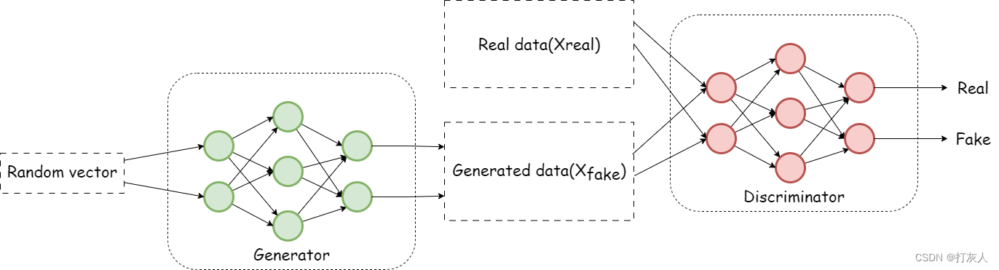

实验任务一：生成对抗网络（GAN）¶
在实验开始前，你需要掌握以下内容
• 深度学习基础：掌握基本的神经网络概念，了解卷积神经网络（CNN）的基本结构。
• PyTorch 基础：
• torch.nn：构建神经网络
• torch.optim：优化器的使用
• torch.utils.data：数据加载
• torchvision：数据预处理和可视化
注意
在实验开始时，请确保实验运行在GPU上！
在python环境下或在jupyter notebook里测试：
如果返回True，则GPU能被调用，否则请重启docker环境或举手示意1. 了解GAN的基本概念¶
什么是 GAN？
生成对抗网络（GAN）是一种生成模型，它的目标是学习数据的分布，从而能够生成与真实数据分布相似的样本。GAN通过一种对抗的方式进行训练，利用两个神经网络（生成器和判别器）相互博弈，最终使生成器能够生成高质量的、以假乱真的数据。
GAN包含有两个模型，一个是生成模型（generative model），一个是判别模型(discriminative model)。生成模型的任务是生成看起来自然真实的、和原始数据相似的实例。判别模型的任务是判断给定的实例看起来是自然真实的还是人为伪造的（真实实例来源于数据集，伪造实例来源于生成模型）。
这可以看做一种零和游戏。论文采用类比的手法通俗理解：生成模型像“一个造假团伙，试图生产和使用假币”，而判别模型像“检测假币的警察”。生成器（generator）试图欺骗判别器（discriminator），判别器则努力不被生成器欺骗。模型经过交替优化训练，两种模型都能得到提升，但最终我们要得到的是效果提升到很高很好的生成模型（造假团伙），这个生成模型（造假团伙）所生成的产品能达到真假难分的地步。

结合整体模型图示，再以生成图片作为例子具体说明。我们有两个网络，G（Generator）和D（Discriminator）。Generator是一个生成图片的网络，它接收一个随机的噪声z，通过这个噪声生成图片，记做G(z)。Discriminator是一个判别网络，判别一张图片是不是“真实的”。它的输入是x，x代表一张图片，输出D（x）代表x为真实图片的概率，如果为1，就代表100%是真实的图片，而输出为0，就代表不可能是真实的图片。
GAN模型优化训练¶
在训练过程中，生成网络的目标就是尽量生成真实的图片去欺骗判别网络D。而网络D的目标就是尽量把网络G生成的图片和真实的图片分别开来。这样，G和D构成了一个动态的“博弈过程”。这个博弈过程具体是怎么样的呢？
先了解下纳什均衡，纳什均衡是指博弈中这样的局面，对于每个参与者来说，只要其他人不改变策略，他就无法改善自己的状况。对应的，对于GAN，情况就是生成模型 G 恢复了训练数据的分布（造出了和真实数据一模一样的样本），判别模型再也判别不出来结果，准确率为 50%，约等于乱猜。这是双方网路都得到利益最大化，不再改变自己的策略，也就是不再更新自己的权重。
从概率论的角度，GAN试图学习真实数据的分布\(P_{\text{data}}(x)\)，并通过生成器生成的分布\(P_{\text{gen}}(x)\)来逼近\(P_{\text{data}}(x)\)。
GAN算法中的⽣成器¶
对于⽣成器，输⼊需要⼀个n维度向量，输出为图⽚像素⼤⼩的图⽚。因⽽⾸先我们需要得到输⼊的向量。
这⾥的⽣成器可以是任意可以输出图⽚的模型，⽐如最简单的全连接神经⽹络，⼜或者是反卷积⽹络等。这⾥输⼊的向量我们将其视为携带输出的某些信息，⽐如说⼿写数字为数字⼏，⼿写的潦草程度等等。由于这⾥我们对于输出数字的具体信息不做要求，只要求其能够最⼤程度与真实⼿写数字相似（能骗过判别器）即可。所以我们使⽤随机⽣成的向量来作为输⼊即可，这⾥⾯的随机输⼊最好是满⾜常⻅分布⽐如均值分布，⾼斯分布等。
假如我们后⾯需要获得具体的输出数字等信息的时候，我们可以对输⼊向量产⽣的输出进⾏分析，获取到哪些维度是⽤于控制数字编号等信息的即可以得到具体的输出。⽽在训练之前往往不会去规定它。
GAN算法中的判别器¶
对于判别器不⽤多说，往往是常⻅的判别器，输⼊为图⽚，输出为图⽚的真伪标签。
GAN的训练¶
1.在噪声数据分布中随机采样，输⼊⽣成模型，得到⼀组假数据，记为D(z)
2.在真实数据分布中随机采样，作为真实数据，记做x；
将前两步中某⼀步产⽣的数据作为判别⽹络的输⼊（因此判别模型的输⼊为两类数据，真/假），判别⽹络的输出值为该输⼊属于真实数据的概率，real为1，fake为0.
3.然后根据得到的概率值计算损失函数；
4.根据判别模型和⽣成模型的损失函数，可以利⽤反向传播算法，更新模型的参数。（先更新判别模型的参数，然后通过再采样得到的噪声数据更新⽣成器的参数）
Warning
⽣成模型与对抗模型是完全独⽴的两个模型，他们之间没有什么联系。那么训练采⽤的⼤原则是单独交替迭代训练。
GAN强⼤之处在于能⾃动学习原始真实样本集的数据分布，不管这个分布多么的复杂，只要训练的⾜够好就可以学出来。
传统的机器学习⽅法，⼀般会先定义⼀个模型，再让数据去学习。
⽐如知道原始数据属于⾼斯分布，但不知道⾼斯分布的参数，这时定义⾼斯分布，然后利⽤数据去学习⾼斯分布的参数，得到最终的模型。
再⽐如定义⼀个分类器(如SVM)，然后强⾏让数据进⾏各种⾼维映射，最后变成⼀个简单的分布，SVM可以很轻易的进⾏⼆分类(虽然SVM放松了这种映射关系，但也给了⼀个模型，即核映射)，其实也是事先知道让数据该如何映射，只是映射的参数可以学习。
以上这些⽅法都在直接或间接的告诉数据该如何映射，只是不同的映射⽅法能⼒不⼀样。
⽽GAN的⽣成模型最后可以通过噪声⽣成⼀个完整的真实数据（⽐如⼈脸），说明⽣成模型掌握了从随机噪声到⼈脸数据的分布规律。GAN⼀开始并不知道这个规律是什么样，也就是说GAN是通过⼀次次训练后学习到的真实样本集的数据分布。
GAN的损失函数¶
GAN训练的过程可以描述为求解一个二元函数极小极大值的过程
训练生成器的损失函数其实是对抗损失V(D,G)中关于噪声z的项，其损失函数为：
训练判别器的损失函数其实是对抗损失V(D,G)中关于样本x的项，其损失函数为：
如需更加深入的学习，可参考该论文：Generative Adversarial Nets
2. GAN的实现¶
三个目标
- 编写 GAN 代码，实现随机噪声到手写数字的映射。
- 训练 GAN，使其能够生成高质量的手写数字图像。
- 可视化生成的图像，观察 GAN 的学习过程。
注意
本模块内容的代码框架已在文档中基本完成，核心部分需要你自行补充完整，在需要补充的部分已经标注# TODO并附上相应的内容提示。
导入所需的模块
import torch # PyTorch 深度学习框架
import torch.nn as nn # 神经网络相关模块
import numpy as np # 数值计算库
from torch.utils.data import DataLoader # 处理数据加载
from torchvision import datasets, transforms # 处理图像数据集和数据变换
from torchvision.utils import save_image # 保存生成的图像
import os # 处理文件和目录操作
生成器
作用
生成器的作用是从随机噪声（Latent Vector）中生成逼真的数据。它的目标是生成的数据能够骗过判别器，使得判别器误以为是真实数据。
输入与输出
• 输入：随机噪声向量 z（通常服从正态分布或均匀分布）
• 输出：与真实数据形状相同的合成数据
nn.Sequential 是什么？
作用
在 PyTorch 中，nn.Sequential 是一个 容器（Container），用于将多个神经网络层 按顺序 组合在一起。
它的作用相当于 一个“流水线”，让数据按照设定好的顺序依次流经多个层，而不需要每一层都单独写 forward 方法。
举例
model = nn.Sequential(
nn.Linear(4, 8), # 线性层: 输入 4 维 -> 输出 8 维
nn.ReLU(), # 激活函数: ReLU
nn.Linear(8, 2) # 线性层: 输入 8 维 -> 输出 2 维
)
实现生成器代码：¶
class Generator(nn.Module):
def __init__(self, input_dim, hidden_dim, output_dim):
super(Generator, self).__init__()
self.model = nn.Sequential(
#TODO # 使用线性层将随机噪声映射到第一个隐藏层
nn.ReLU(), # 使用 ReLU 作为激活函数，帮助模型学习非线性特征
#TODO # 使用线性层将第一个隐藏层映射到第二个隐藏层
nn.ReLU(), # 再次使用 ReLU 激活函数
#TODO # 使用线性层将第二个隐藏层映射到输出层，输出为图像的像素大小
nn.Tanh() # 使用 Tanh 将输出归一化到 [-1, 1]，适用于图像生成
)
def forward(self, x):
#TODO # 前向传播：将输入 x 通过模型进行计算，得到生成的图像
判别器
作用
判别器的作用是区分真实数据与生成器生成的数据。它的目标是尽可能正确地判断输入数据是真实数据还是生成数据。
输入与输出
• 输入：真实数据 x 或生成数据 G(z)。
• 输出：一个介于 [0,1] 之间的数，表示数据是真实的概率。
实现判别器代码：¶
class Discriminator(nn.Module):
def __init__(self, input_dim, hidden_dim):
super(Discriminator, self).__init__()
self.model = nn.Sequential(
#TODO # 输入层到第一个隐藏层，使用线性层
#TODO # 使用 LeakyReLU 激活函数，避免梯度消失问题，negative_slope参数设置为0.1
#TODO # 第一个隐藏层到第二个隐藏层，使用线性层
#TODO # 再次使用 LeakyReLU 激活函数，negative_slope参数设置为0.1
#TODO # 第二个隐藏层到输出层，使用线性层
#TODO # 使用 Sigmoid 激活函数，将输出范围限制在 [0, 1]
)
def forward(self, x):
#TODO # 前向传播：将输入 x 通过模型进行计算，得到判别结果
思考题
思考题1: 为什么GAN的训练被描述为一个对抗过程？这种对抗机制如何促进生成器的改进？
思考题2: ReLU和LeakyReLU各有什么特征？为什么在生成器中使用ReLU而在判别器中使用LeakyReLU？
定义主函数，在主函数中完成以下过程：¶
- 数据加载： 加载并预处理数据集。对于GAN的训练，通常需要将数据集转换为张量格式，并进行适当的归一化。
- 模型初始化： 创建生成器和判别器模型实例，并将它们移动到合适的设备（如GPU）上。
- 优化器和损失函数定义： 为生成器和判别器分别定义优化器（如Adam），并设置适当的学习率和其他超参数。 定义损失函数（如二元交叉熵损失）用于评估模型性能。
- 训练循环： 迭代多个epoch进行训练。在每个epoch中，遍历数据集并进行以下操作：
- 训练判别器：使用真实数据和生成的假数据更新判别器的参数。
- 训练生成器：通过生成假数据并试图欺骗判别器来更新生成器的参数。
- 记录损失值到TensorBoard，以监控训练过程。
- 结果保存： 在每个epoch结束时，生成一些示例图像并保存到TensorBoard，以便观察生成器的进展。
def main():
# 设备配置：使用 GPU（如果可用），否则使用 CPU
device = torch.device('cuda:0' if torch.cuda.is_available() else 'cpu')
# 设置模型和训练的超参数
input_dim = 100 # 生成器输入的随机噪声向量维度
hidden_dim = 256 # 隐藏层维度
output_dim = 28 * 28 # MNIST 数据集图像尺寸（28x28）
batch_size = 128 # 训练时的批量大小
num_epoch = 30 # 训练的总轮数
# 加载 MNIST 数据集
train_dataset = datasets.MNIST(root="./data/", train=True, transform=transforms.ToTensor(), download=True)
train_loader = DataLoader(dataset=train_dataset, batch_size=batch_size, shuffle=True)
# 创建生成器G和判别器D，并移动到 GPU（如果可用）
#TODO # 生成器G
#TOOD # 判别器D
# 定义针对生成器G的优化器optim_G和针对判别器D的优化器optim_D，要求使用Adam优化器，学习率设置为0.0002
#TODO # 生成器优化器optim_G
#TODO # 判别器优化器optim_D
loss_func = nn.BCELoss() # 使用二元交叉熵损失
# 开始训练
for epoch in range(num_epoch):
total_loss_D, total_loss_G = 0, 0
for i, (real_images, _) in enumerate(train_loader):
loss_D = train_discriminator(real_images, D, G, loss_func, optim_D, batch_size, input_dim, device) # 训练判别器
loss_G = train_generator(D, G, loss_func, optim_G, batch_size, input_dim, device) # 训练生成器
total_loss_D += loss_D
total_loss_G += loss_G
# 每 100 步打印一次损失
if (i + 1) % 100 == 0 or (i + 1) == len(train_loader):
print(f'Epoch {epoch:02d} | Step {i + 1:04d} / {len(train_loader)} | Loss_D {total_loss_D / (i + 1):.4f} | Loss_G {total_loss_G / (i + 1):.4f}')
# 生成并保存示例图像
with torch.no_grad():
noise = torch.randn(64, input_dim, device=device)
fake_images = G(noise).view(-1, 1, 28, 28) # 调整形状为图像格式
# 记录生成的图像到 TensorBoard
img_grid = torchvision.utils.make_grid(fake_images, normalize=True)
writer.add_image('Generated Images', img_grid, epoch)
实现train_discriminator和train_generator¶
def train_discriminator(real_images, D, G, loss_func, optim_D, batch_size, input_dim, device):
real_images = real_images.view(-1, 28 * 28).to(device) # 获取真实图像并展平
real_output = D(real_images) # 判别器预测真实图像
#TODO # 计算真实样本的损失real_loss
noise = torch.randn(batch_size, input_dim, device=device) # 生成随机噪声
fake_images = G(noise).detach() # 生成假图像（detach 避免梯度传递给 G）
fake_output = D(fake_images) # 判别器预测假图像
#TODO # 计算假样本的损失fake_loss
loss_D = real_loss + fake_loss # 判别器总损失
optim_D.zero_grad() # 清空梯度
loss_D.backward() # 反向传播
optim_D.step() # 更新判别器参数
return loss_D.item() # 返回标量损失
def train_generator(D, G, loss_func, optim_G, batch_size, input_dim, device):
noise = torch.randn(batch_size, input_dim, device=device) # 生成随机噪声
fake_images = G(noise) # 生成假图像
fake_output = D(fake_images) # 判别器对假图像的判断
#TODO # 计算生成器损失（希望生成的图像判别为真）
optim_G.zero_grad() # 清空梯度
loss_G.backward() # 反向传播
optim_G.step() # 更新生成器参数
return loss_G.item() # 返回标量损失
执行main()函数：¶
什么是优化器
优化器（Optimizer）是深度学习中用于更新神经网络参数的算法。它根据梯度下降的原理调整模型的权重，使损失函数（Loss）最小化，从而提高模型的性能。
在 PyTorch 中，优化器通常用于计算梯度后更新权重，典型步骤如下：
-
前向传播 计算损失 loss
-
反向传播 计算梯度 loss.backward()
-
清空旧梯度 optimizer.zero_grad()
-
更新参数 optimizer.step()
二元交叉熵损失
二元交叉熵损失（BCE Loss） 是深度学习中常用的一种损失函数，主要用于二分类任务，如判别器的真假分类任务。其数学表达式如下：
这个损失函数的目标是：
- 如果样本的标签\(y_i=1\)（真实数据），那么最小化损失函数\(L\)就是在最大化\(\log(\hat{y}_i)\)，即最大化\(\hat{y}_i\)
- 如果样本的标签\(y_i=0\)（虚假数据），那么最小化损失函数\(L\)就是在最大化\(\log(1-\hat{y}_i)\)，即最小化\(\hat{y}_i\)
为什么适用于 GAN？
在 GAN 中：
•判别器 D 需要判断输入数据是真实数据（1）还是假数据（0），因此 BCE 作为损失函数是合理的。
•生成器 G 的目标是欺骗判别器，让判别器把假数据当成真的，因此 BCE 也适用于 G 的损失计算。
3. 使用 TensorBoard 可视化训练过程¶
什么是 TensorBoard？
TensorBoard 是一个用于可视化和监控机器学习实验的工具。它可以帮助我们实时查看训练过程中的损失变化、生成的图像质量等信息，从而更直观地理解模型的训练效果。
目标
- 学会使用 TensorBoard 记录训练过程中的损失值。
- 学会使用 TensorBoard 可视化生成的图像。
- 学会启动 TensorBoard 并查看训练过程。
安装 TensorBoard¶
在训练代码中导入 TensorBoard 相关模块¶
初始化SummaryWriter¶
创建一个SummaryWriter实例，它将用于记录训练过程中的数据。你可以指定一个目录来存储日志文件：
记录训练过程中的数据¶
在训练循环中，使用SummaryWriter记录各种指标，例如损失、准确率、模型参数等。以下是一些常见的记录方式：
- 记录标量（如损失和准确率）：
for epoch in range(num_epochs):
for i, (inputs, labels) in enumerate(train_loader):
# 前向传播、计算损失、反向传播和优化步骤
# ...
# 假设loss是计算得到的损失
writer.add_scalar('Loss/train', loss.item(), epoch * len(train_loader) + i)
# 假设accuracy是计算得到的准确率
writer.add_scalar('Accuracy/train', accuracy, epoch * len(train_loader) + i)
关闭SummaryWriter¶
在训练结束后，关闭SummaryWriter以释放资源：
启动 TensorBoard¶
在训练完成后，在bash中使用以下命令启动 TensorBoard：
然后打开浏览器，访问 http://localhost:6006 查看训练过程的可视化结果。
思考题
思考题3: 尝试使用TensorBoard可视化GAN模型的生成器和判别器的模型结构图。